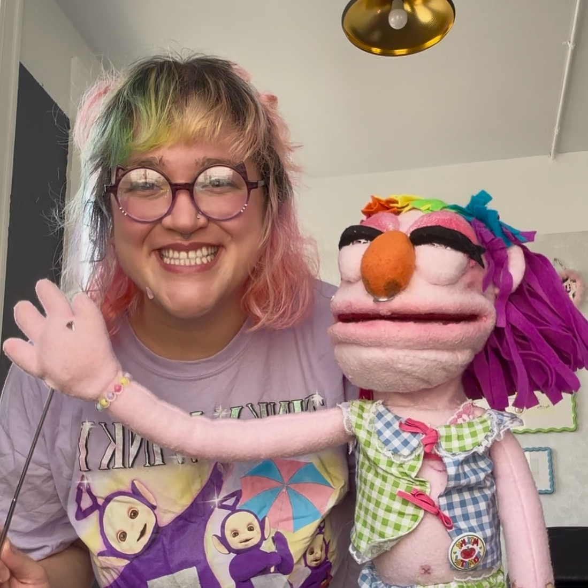
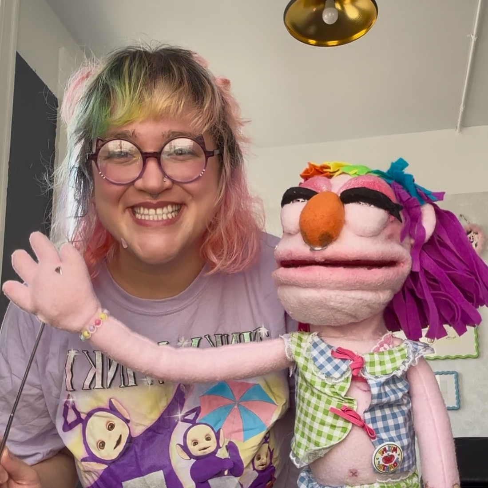
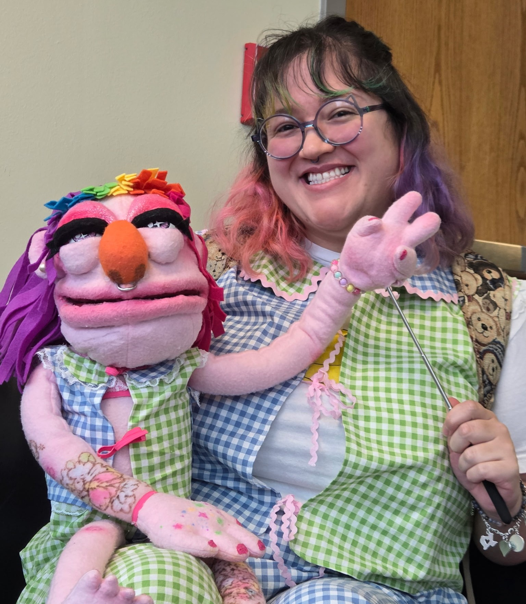

Creative Corner
Screaming into the void
*only slightly screaming*
Puppet Making
Fun Fact:
I have a puppet of myself that I made just because I watched a video and decided I could totally do that. I finished it right on time to show a guest speaker for my major's industry seminar class at UIW who works as a puppeteer at Sesame Street. I don't want to be a puppeteer, I just wanted to be able to say I can make a puppet. I even made us matching outfits.

 

Tattoos
I was a tattoo artist! Here's some more about that eventually
Clothing
I took theater costume construction and costume history courses in college to get a better understanding of clothing fabrication and pattern-making to assist in 3D costume construction programs like Marvelous Designer. Marvelous Designer is a 3D Clothing Simulator that mimics real-world sewing lingo and processes to create patterns in the 3D space. I used the knowledge from the class to make a recreation of Marilyn Monroe's iconic dress in a Marvelous, pictured below. The final assignment for the class itself was for pajama pants but I went ahead and created a matching set of capris and a vest that I could wear out. When I made my puppet I made her a matching set too!
